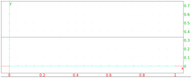
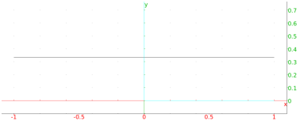
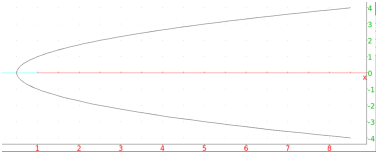
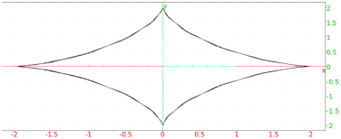
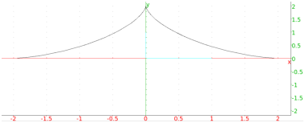

12.18.1 Loci: locus
The locus command draws the locus of points determined by
geometric objects moving in the plane, where the object depends on a
point moving along a curve. It can draw
a locus of points which depends on points on a curve, or
the envelope of a family of lines depending on points on a curve.
The locus of points depending on points on a curve.
For this, the locus command takes two mandatory arguments and two
optional arguments.
-
The first mandatory argument is a variable name. This variable
needs to already have been assigned to a point, and that point
should be a function of a second point which moves along a curve.
This second point is the second argument to locus.
- The second mandatory argument is another variable name. This
variable needs to already have been assigned to a point,
that point should be the result of the element command; for
example, defined by element(C) for a curve C.
(See section 12.6.15.)
- The optional third argument is used to set t to
an interval, where t is the parameter
for the curve C. (You can double check the
name of the parameter for a curve C with the command
parameq(C).)
- The optional fourth argument is used to set the value of
tstep for the parameter t.
locus will draw the locus of points formed by the first
argument, as the second argument traces over the curve C.
Input:
P := element(line(i, i+1))
then:
G := isobarycenter(-1,1,P)
then:
locus(G,P)
This will draw the set of isobarycenters of the triangles with vertices
-1, 1 and P, where P ranges over
the line through i and i+1.
Output:

Input:
parameq(C)
Output:
t + i
Input:
locus(G,P,t=-3..3,tstep=0.1)
Output:

The envelope of a family of lines which depend on points on a
curve.
For this, the locus command takes two mandatory arguments and
two optional arguments.
-
The first mandatory argument is a variable name. This variable
needs to already have been assigned to a line, and that line
should be a function of a point which moves along a curve. This point is the
second argument to locus.
- The second mandatory argument is another variable name. This
variable needs to already have been assigned to a point,
that point should be the result of the element command; for
example, defined by element(C) for a curve C.
(See section 12.6.15.)
- The optional third argument is used to set t to
an interval, where t is the parameter
for the curve C. (You can double check the
name of the parameter for a curve C with the command
parameq(C).)
- The optional fourth argument is used to set the value of
tstep for the parameter t.
locus will draw the envelope of the lines formed by the first
argument, as the second argument traces over the curve C.
Input:
F := point(1)
then:
H := element(line(x=0))
then:
d := perpen_bisector(F,H)
then:
locus(d,H)
This will draw the envelope of the family of perpendicular bisectors
of the segments from the point 1 to the points on the line
x=0.
Output:

To draw the envelope of a family of lines which depend on a parameter,
such as the lines given by the equations
over the parameter t, the parameter can be regarded as the affixes
of points on the line y=0.
Input:
H := element(line(y=0))
then:
D := line(y + x*tan(affix(H)) - 2*sin(affix(H)))
then:
locus(D,H)
Output:

Input:
locus(D,H,t=0..pi)
Output:
